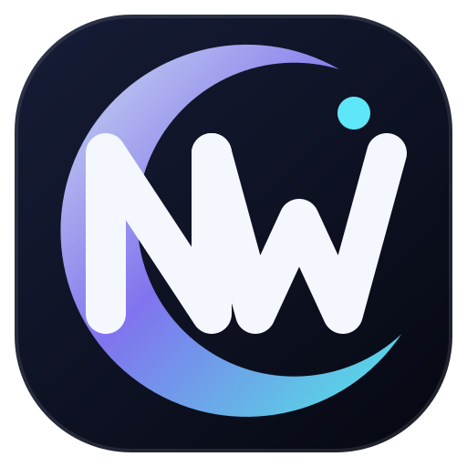

01
Player-first rooms
Queue, chat, people, reactions, and timeline moments live in one responsive lounge beside the official player.

NightWatch Latest releaseYour private screening room
Create a room, invite your people, and keep playback, queues, chat, reactions, and memorable moments on the same beat.
A calmer way to watch
NightWatch gives the picture room to breathe while everything social stays close enough to reach.
Queue, chat, people, reactions, and timeline moments live in one responsive lounge beside the official player.
Search, discover, queue, and return to the room without losing the moment.
Atmospheres, accents, backdrops, card depth, accessibility, and motion preferences adapt the whole app.
From download to movie night
Download the latest signed installer from GitHub Releases and complete the Windows setup.
Open a temporary room with a code, or sign in with Discord for persistent social features.
Load an embeddable YouTube video, build the queue, and let NightWatch keep participants synchronized.
Built to stay current
Published installers, version notes, blockmaps, and update metadata live on the official GitHub Releases page. NightWatch checks the same release channel from the desktop app.